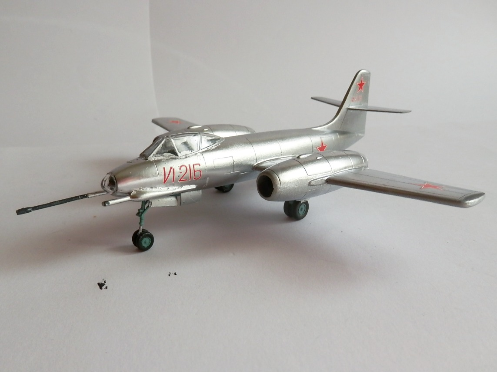
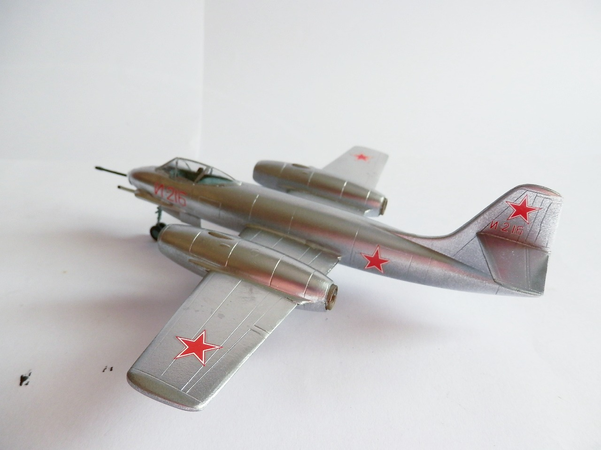
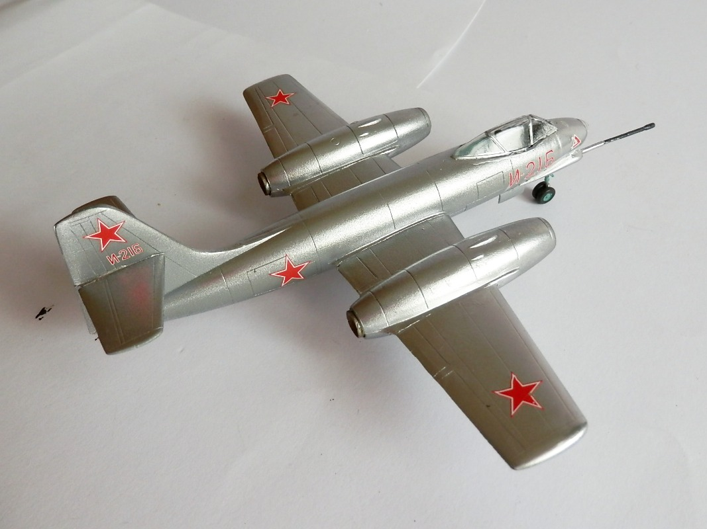

Aerei · scale model archive
Alexeyev I-215
Alexeyev I-215 — Kit: Amodel, Scale: 1/72. Soviet jet fighter prototype, only one built, first flight on 18. April 1948. Apologies for the missing second…

Photo gallery


English description
Soviet jet fighter prototype, only one built, first flight on 18. April 1948.
Apologies for the missing second gun, I have to retrieve it somewhere
Descrizione italiana
Prototipo di caccia a reazione sovietico, costruito in un solo esemplare; primo volo il 18 aprile 1948. Mi scuso per il secondo cannone mancante: devo recuperarlo da qualche parte.